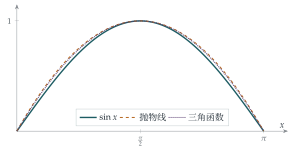

STEP II 2014，第 2 题
继续之前，请先阅读题目（原题为英文）。题目载于 STEP Support Programme 的题目资料库： step.maths.org/questions/14-s2-q2
引子
每个中学生都知道 \(\pi\) 比 \(3\) 大一点。但你会怎样证明它的一个上界（upper bound）呢？阿基米德（Archimedes）用的是多边形。这道题的做法却完全出人意表：取一条关于函数的一般不等式，代入一条简单的抛物线（parabola），便直接读出 \(\pi^2 \leq 10\)。换另一个函数，更可得出著名的近似值 \(\pi \leq \frac{22}{7}\)。
不等式 \((*)\) 称为Wirtinger 不等式（Wirtinger’s inequality）。它说的是：一个两端都固定为零的函数，不可能只“大”而不“陡”。它的背后是数学物理中最核心的思想之一：弦的振动、量子粒子的能级，以及特征值（eigenvalue）理论。
动笔之前
一个在 \([0, \pi]\) 两端都为零的函数，如果在中间取值很大，为甚么就必须很陡？条件 \(\mathrm{f}(0) = \mathrm{f}(\pi) = 0\) 为甚么重要？
要在长度为 \(\pi\) 的距离之内，由 \(0\) 升到某个高度 \(H\) 再降回 \(0\)，函数上升的平均速率至少要有 \(H/(\pi/2)\)。因此它的导数（derivative）不可能处处都小。若没有两端的条件，就没有这种限制：常数函数可以任意大，而导数为零。不等式 \((*)\) 把这个想法精确化，以平方的积分（integral）来量度“大小”和“陡峭程度”。
逐步解题
阶段 1 正弦波
\(\int_0^\pi \sin^2 nx\,\mathrm{d}x\) 等于甚么？\(\int_0^\pi \cos^2 nx\,\mathrm{d}x\) 呢？（利用 \(\sin^2\theta = \frac12(1 - \cos 2\theta)\)。）
两者都等于 \(\frac\pi2\)，因为 \(\int_0^\pi \cos 2nx\,\mathrm{d}x = 0\)。取 \(\mathrm{f}(x) = \sin nx\)，则 \(\mathrm{f}'(x) = n\cos nx\)，所以 \[\int_0^\pi \mathrm{f}^2 = \frac\pi2 \leq \frac{n^2\pi}{2} = \int_0^\pi (\mathrm{f}')^2,\] 因为 \(n \geq 1\)。■ 留意 \(n = 1\) 时等号成立，所以这条不等式已经紧得不能再紧。
阶段 2 端点条件不可或缺
找一个简单的函数，满足 \(\mathrm{f}(0) \neq 0\)，而 \((*)\) 对它不成立。然后再找一个满足 \(\mathrm{f}(0) = 0\) 但 \(\mathrm{f}(\pi) \neq 0\) 的。
常数函数 \(\mathrm{f}(x) = 1\) 有 \(\mathrm{f}(0) = 1 \neq 0\)，而且 \(\int_0^\pi 1\,\mathrm{d}x = \pi > 0 = \int_0^\pi 0\,\mathrm{d}x\)。
至于第二个，\(\mathrm{f}(x) = x\) 有 \(\mathrm{f}(0) = 0\) 但 \(\mathrm{f}(\pi) = \pi\)，而且 \[\int_0^\pi x^2\,\mathrm{d}x = \frac{\pi^3}{3} \approx 10.3 > \pi = \int_0^\pi 1^2\,\mathrm{d}x.\] 所以 \((*)\) 在两种情况下都不成立。■
阶段 3 抛物线
哪个二次函数在 \(x = 0\) 和 \(x = \pi\) 处都等于零？（若不计常数倍，就只有一个。为甚么这个倍数无关紧要？）
这个二次函数必定是 \(x(\pi - x)\) 的倍数，而把 \(\mathrm{f}\) 乘以常数 \(k\)，\((*)\) 的两边都会乘以 \(k^2\)，所以我们可以取 \(\mathrm{f}(x) = x(\pi - x)\)，即 \(a = -1\)、\(b = \pi\)、\(c = 0\)。于是 \(\mathrm{f}'(x) = \pi - 2x\)，再用代换（substitution）\(u = x - \frac\pi2\)（这样两个被积函数都变成偶函数）， \[\begin{aligned} \int_0^\pi x^2(\pi - x)^2\,\mathrm{d}x &= \int_{-\pi/2}^{\pi/2} \left( \frac{\pi^2}{4} - u^2 \right)^2 \mathrm{d}u = \frac{\pi^5}{30}, \\ \int_0^\pi (\pi - 2x)^2\,\mathrm{d}x &= \int_{-\pi/2}^{\pi/2} 4u^2\,\mathrm{d}u = \frac{\pi^3}{3}. \end{aligned}\] （第一个积分：\(\int_{-h}^{h}(h^2 - u^2)^2\,\mathrm{d}u = 2\bigl(h^5 - \frac23 h^5 + \frac15 h^5\bigr) = \frac{16}{15}h^5\)，其中 \(h = \frac\pi2\)。）所以 \((*)\) 给出 \(\frac{\pi^5}{30} \leq \frac{\pi^3}{3}\)，即 \[\pi^2 \leq 10. \qed\]
阶段 4 三角函数的选择
对于 \(\mathrm{f}(x) = p\sin\frac12 x + q\cos\frac12 x + r\)，\(\mathrm{f}(0) = 0\) 和 \(\mathrm{f}(\pi) = 0\) 对 \(p\)、\(q\)、\(r\) 施加了甚么条件？
\(\mathrm{f}(0) = q + r = 0\) 及 \(\mathrm{f}(\pi) = p + r = 0\)。所以 \(p = q = -r\)，经缩放后，我们取 \(\mathrm{f}(x) = \sin\frac x2 + \cos\frac x2 - 1\)。
对这个函数计算 \(\int_0^\pi \mathrm{f}^2\) 和 \(\int_0^\pi (\mathrm{f}')^2\)。由此得出关于 \(\pi\) 的甚么不等式？
记 \(s = \sin\frac x2\) 及 \(c = \cos\frac x2\)。则 \((s + c)^2 = 1 + 2sc = 1 + \sin x\)，所以 \[\mathrm{f}^2 = (s + c)^2 - 2(s + c) + 1 = 2 + \sin x - 2\sin\tfrac x2 - 2\cos\tfrac x2.\] 利用 \(\int_0^\pi \sin x = 2\)、\(\int_0^\pi \sin\frac x2 = 2\) 及 \(\int_0^\pi \cos\frac x2 = 2\)， \[\int_0^\pi \mathrm{f}^2\,\mathrm{d}x = 2\pi + 2 - 4 - 4 = 2\pi - 6.\] 另外 \(\mathrm{f}' = \frac12(c - s)\)，所以 \((\mathrm{f}')^2 = \frac14(1 - \sin x)\)，而 \(\int_0^\pi (\mathrm{f}')^2\,\mathrm{d}x = \frac14(\pi - 2)\)。于是 \((*)\) 给出 \[2\pi - 6 \leq \frac{\pi - 2}{4} \quad\Longrightarrow\quad 8\pi - 24 \leq \pi - 2 \quad\Longrightarrow\quad \pi \leq \frac{22}{7}. \qed\]
阶段 5 哪个较好？
由 \(\pi \leq \frac{22}{7}\) 可得 \(\pi^2 \leq \frac{484}{49} \approx 9.878\)，比 \(\pi^2 \leq 10\) 更好。（真实值是 \(\pi^2 \approx 9.870\)。）留意这里证明的是 \(\frac{22}{7}\) 为 \(\pi\) 的一个上界；而 第 4.3 节 中一个截然不同的积分，则证明它并不等于 \(\pi\)。
回顾
一般的不等式，特定的函数。选定一个测试函数（test function），就把一个关于所有函数的命题，变成一个关于某个数的命题。
缩放。\((*)\) 的两边按同一个因子缩放，所以在每一族函数中，我们都可以把那个自由常数固定下来。
测试函数愈好，界愈好。测试函数愈接近极端情况 \(\sin x\)，不等式就愈接近等式，估计也就愈准确（图 3.7.1）。

背后的数学
为甚么 \((*)\) 成立？到了大学你会学到，\([0, \pi]\) 上任何在两端都为零的合理函数，都可以写成傅里叶正弦级数（Fourier sine series）： \[\mathrm{f}(x) = b_1\sin x + b_2\sin 2x + b_3\sin 3x + \cdots.\] 由于当 \(m \neq n\) 时 \(\int_0^\pi \sin mx\sin nx\,\mathrm{d}x = 0\)，平方后再积分，所有交叉项都会消失，得出 \[\int_0^\pi \mathrm{f}^2 = \frac\pi2\bigl(b_1^2 + b_2^2 + b_3^2 + \cdots\bigr), \qquad \int_0^\pi (\mathrm{f}')^2 = \frac\pi2\bigl(1^2 b_1^2 + 2^2 b_2^2 + 3^2 b_3^2 + \cdots\bigr).\] 右式的每一项都不小于左式的对应项，这就证明了 \((*)\)，同时说明等号只在 \(\mathrm{f}\) 是 \(\sin x\) 的倍数时成立。题目的第 (i) 部分就是只有一项的情况。
振动的弦与量子粒子
比值 \(\int (\mathrm{f}')^2 \big/ \int \mathrm{f}^2\) 称为瑞利商（Rayleigh quotient），而 \((*)\) 说的是：对于固定在 \(0\) 和 \(\pi\) 的函数，它的最小可能值是 \(1\)。这个数有物理意义。对一条两端固定的弦来说，\(\int (\mathrm{f}')^2\) 量度拉伸的能量，\(\int \mathrm{f}^2\) 量度位移的大小，而这个比值的最小值决定了弦所能奏出的最低音。在量子力学（quantum mechanics）中，同一个最小值就是困在盒子里的粒子的最低能量：它不可能是零，因为两端固定的波必须弯曲。瑞利勋爵（Lord Rayleigh）正是用这一招——猜一个测试函数，再计算比值——来估计振动系统的频率；由于极端情况给出最小值，任何猜测都会给出真正最低频率的一个上界，而好的猜测更会给出非常准确的上界。
变分法
找出令某个积分之比取得最小值的函数，是变分法（calculus of variations）的问题，当中的未知量是整个函数，而不是一个数。这里取得最小值的函数 \(\sin x\) 满足微分方程（differential equation）\(\mathrm{f}'' + \mathrm{f} = 0\)，而这并非巧合：求积分的最小值，总会导出一条由取得最小值的函数所满足的微分方程。我们会在 第 4.7 节 再谈这个想法。
思维技巧
一条对某类函数中每一个都成立的不等式，可以套用在一个巧妙选取的函数上，从而得到关于某个特定数的信息。
个中艺术在于选择：接近极端情况的测试函数，会给出近乎最佳的结果。这个想法贯穿分析学、物理学和工程学，由估计特征值到有限元法（finite element method）皆然。
延伸练习
四次函数。在 \((*)\) 中取 \(\mathrm{f}(x) = x^2(\pi - x)^2\)。证明它只能给出 \(\pi^2 \leq 12\)。为甚么这个测试函数比抛物线差？（把它的形状与 \(\sin x\) 比较。）
两个正弦波。对 \(\mathrm{f}(x) = \sin x + \sin 2x\) 直接验证 \((*)\)，把两边都计算出来。
另一个区间。用代换证明：若 \(\mathrm{g}(0) = \mathrm{g}(L) = 0\)，则 \(\displaystyle\int_0^L \mathrm{g}^2 \leq \frac{L^2}{\pi^2}\int_0^L (\mathrm{g}')^2\)。这对不同长度的弦说明了甚么？
瑞利法。 较难 取 \(\mathrm{f}(x) = x(\pi - x) + \lambda x^2(\pi - x)^2\)，并选取 \(\lambda\) 使 \(\pi^2\) 的界尽可能好。（代数运算相当繁重，用电脑代数系统会有帮助。）
延伸阅读
T. W. Körner, Fourier Analysis（Cambridge University Press）。一本精彩而旁征博引的书，讲述傅里叶级数及其应用，作者是剑桥的分析学家。
Hardy, Littlewood & Pólya, Inequalities（Cambridge University Press）。第 7 章讨论 Wirtinger 不等式及相关的不等式。
Richard Feynman, The Feynman Lectures on Physics，第 II 卷第 19 章（“The principle of least action”，最小作用量原理）。费曼（Feynman）关于求积分最小值的一讲，通篇贯穿物理直觉。可于网上免费阅读。